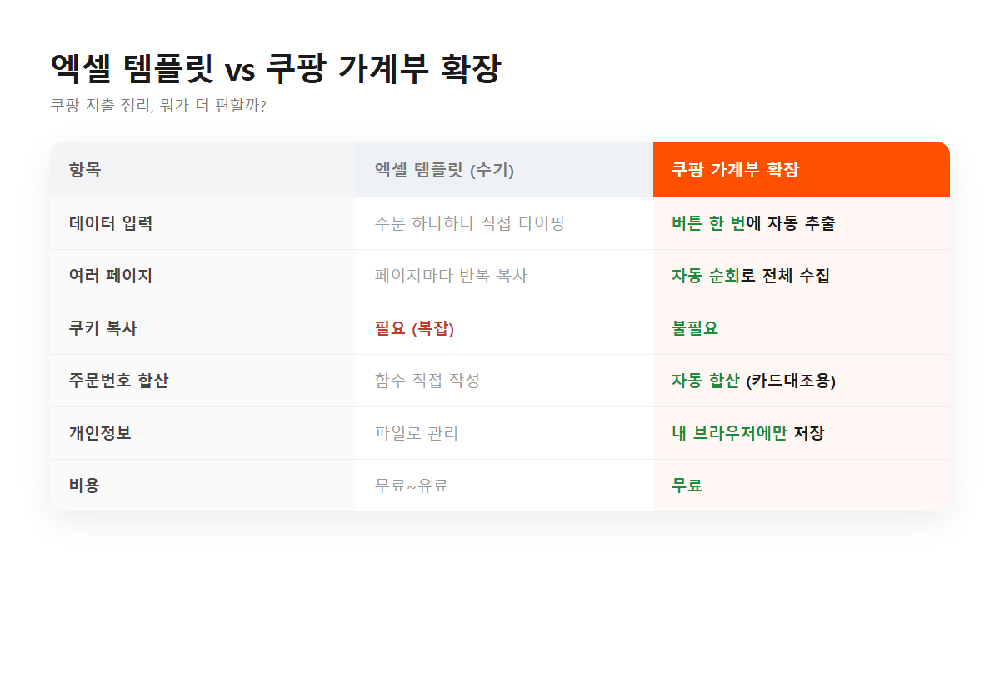

쿠팡 지출을 정리하는 방법은 크게 두 가지다. 엑셀 템플릿에 직접 정리하거나, 확장으로 자동 추출하거나. 나는 둘 다 꽤 오래 써봤다. 그래서 뭐가 언제 나은지 솔직하게 적어본다.
블로그에서 잘 만든 가계부 템플릿을 받아서 쿠팡 주문을 옮겨 적었다. 템플릿 자체는 좋다. 내 마음대로 항목도 넣고, 수식도 짜고. 근데 문제는 데이터를 채워 넣는 과정이다.
주문 페이지 열어서 날짜 복사, 상품명 복사, 금액 복사… 이걸 주문마다 반복한다. 몇 건이면 괜찮은데 몇 달치가 쌓이면 이게 일이 된다. 어떤 템플릿은 쿠키를 복사해서 붙여넣게 하는데, 그건 좀 복잡하고 보안상 찜찜하기도 했다.
결국 "채워 넣는 과정"을 자동화하고 싶어서 확장을 직접 만들었다. 주문목록 페이지에서 버튼 한 번 누르면 여러 페이지를 자동으로 순회하면서 전부 긁어온다. 옮겨 적을 필요가 없다.

정리하면 이렇다.
| 엑셀 템플릿 | 확장 | |
|---|---|---|
| 입력 | 수기 (복사·붙여넣기 반복) | 버튼 한 번, 자동 |
| 여러 페이지 | 페이지마다 반복 | 자동 순회 |
| 커스텀 | 자유롭게 수식·항목 편집 | 정해진 리포트 위주 |
| 쿠키 복사 | 필요한 경우 있음 | 불필요 |
솔직히 완전 자기 입맛대로 표를 짜고 싶으면 엑셀 템플릿이 낫다. 대신 그만큼 손이 많이 간다. 반대로 "그냥 빠르게 뽑아서 지출만 보고 싶다"면 확장이 압도적이다. 나는 후자라서 확장으로 넘어왔고, 확장으로 뽑은 CSV를 다시 내 엑셀 템플릿에 붙여넣기도 한다. 둘을 섞어 쓰는 것도 방법이다.
도구는 이기고 지는 게 아니라 역할이 다른 거다. 자동으로 뽑고(확장), 자유롭게 가공한다(엑셀). 둘 다 쓰면 된다.
데이터가 외부로 안 나가는 것도 확장 쪽이 마음 편했다. 주문내역은 전부 브라우저에만 저장되고 서버로 안 보낸다.
#쿠팡가계부자동화 #쿠팡엑셀템플릿 #쿠팡주문내역정리 #쿠팡지출정리 #가계부템플릿 #쿠팡엑셀 #크롬확장 #1인개발